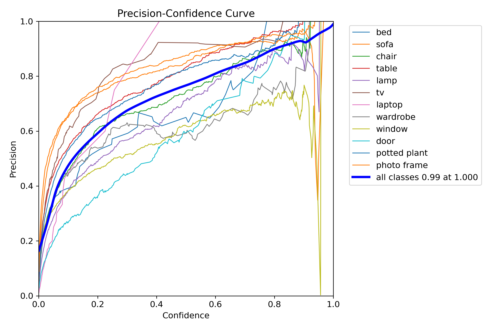

Vision Based Mobile Assistive Detection System
Group 20 - Adib Khondoker, Dexin Huang, Revath Sankar
Motivation
- Goal of the project is to develop a computer vision system for local assistive operations by utilizing computer vision to support the visually impaired in low-light or poor-visibility conditions
- Use onboard detection hardware to locate other individuals and objects and relay their positions to a GUI on a laptop/mobile device for the user
System
Remember to use combination of descriptions, photos, and figures
Architecture
Blah blah blah
Technical Components
Real-Time Vision Algorithm
The "YOLO" (You Only Look Once) algorithm is a prominent real-time object detection algorithm that uses a single convolutional neural network to predict bounding boxes and classify objects simultaneously. YOLO is unique in that it treats object detection as a single regression task, predicting bouding boxes and class probabilities directly from full images in one evaluation. This has made YOLO significantly faster than previous two-way detectors.

Model Architecture
The YOLO model is comprised of a three-part architectured that follows a "Backbone, Neck, Head" pattern. In this architecture, the backbone serves to extract core features from the input image, the neck takes in multi-scale features from the backbone and fuses or aggregates them to create a richer feature set; often using the Feature Pyramid Network and Path Aggression Network techniques, finally, the head consumes the refined feature information from the nexk to make final predictions, generate bounding box coordinates; object confidence scores and class labels.
| Parameter | Value |
|---|---|
| Training Epochs | 100 |
| Image Size | 640 px |
| Training Size | 80% |
| Cosine Learning Rate | True |
| Workers | 100 | Learning Rate | 1e-2 |
Prototype
Blah blah blah
Results
YOLO Object Detection Performance
Fine-tuning YOLOv8n on home-relevant classes achieved 85.4% mAP with significant noise reduction. The specialized model increased average confidence from 37.3% to 68.5% compared to the pretrained COCO dataset. By focusing on only 12 classes of common household objects instead of 80, the model eliminates false positives like surfboards and laptops that distract from assistive operations.
| Statistic | Value |
|---|---|
| Box Loss | 0.8402 |
| Classification Loss | 0.552 |
| Focal Loss (DFL) | 0.9931 |
| Metric | Plot |
|---|---|
| F1-Confidence Curve |  |
| Precision-Confidence Curve |  |
| Precision-Recall Curve |  |
| Recall-Confidence Curve |  |
| Confusion Matrix |  |
References
Blah blah blah
Our Team

Revath Sankar
Masters candidate in Biomedical Engineering - Interested in applications of computer vision in biomedical AI.

Team Member
Description and link
Team Member
Description and link
Contact
Contact Name 1: email here
Contact Name 2: email here
Other Contact Information: other contact info
Columbia University Department of Electrical Engineering
Instructor: Professsor Xiaofan (Fred) Jiang